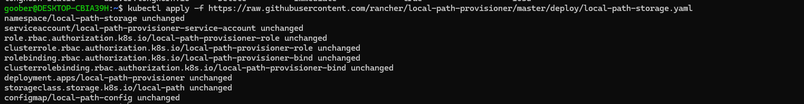
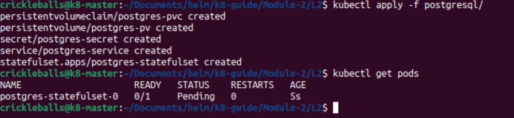
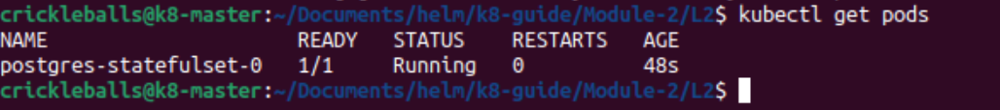
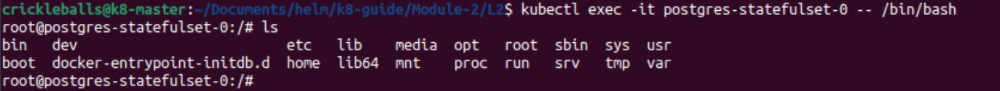

2.1: PostgreSQL Walkthrough
This will be a step-by-step guide to deploying PostgreSQL on Kubernetes with a LocalPath storage provisioner!
Overview
PostgreSQL has five resources that we will apply to our cluster using manifest files.
- StatefulSet (because we are using a database)
- Service
- Secret
- PVC
- PV (for manual storage)
But first, we will start by applying a localpath storage provisioner to our single-node cluster. This will not be an effective method for multi-node clusters, instead use a different provisioner like Longhorn.
Exercise
Look through and read the comments of the PostgreSQL manifest files. The StatefulSet is the bread and butter of deploying an application in Kubernetes, so start with that.
Things to Emphasize
- The StatefulSet is how we run our database Pod(s) with stable storage and identity. Unlike a Deployment, a StatefulSet keeps track of each Pod’s name and volume.
- The Service for this StatefulSet is a headless Service (
clusterIP: None). This means it doesn’t give you a single IP address. Instead, it creates DNS records for each Pod equal to the service name. Databases like PostgreSQL need stable network identities, so this is important. - The Secret is where we keep our sensitive info. In this case, the username and password. Always base64 your secrets. For real clusters, you’d store this more securely.
- The PVC (PersistentVolumeClaim) asks for storage. The PV (PersistentVolume) provides the actual storage from your node. The PVC and PV must match on
storageClassName(manual) and access mode. - Notice how the Pod inside the StatefulSet uses
volumeMountsto mount the storage at/var/lib/postgresql/data. That’s where PostgreSQL keeps its database files. This file path will be different depending on your app.
Apply Files
Before we start applying the PostgreSQL-related resources, we need to set up a storage provisioner for our cluster. The following command applies a LocalPath storage provisioner directly from the Rancher repository. This method is simple and quick, but it doesn't allow for customization of the configuration files. Once it is applied, all your volume mounts will exist in /opt/local-path-provisioner.
kubectl apply -f https://raw.githubusercontent.com/rancher/local-path-provisioner/master/deploy/local-path-storage.yaml
Apply Postgres Files
-
Apply the Secret first and check if it exists. This stores the encoded username and password for the admin user on the database. We reference it in the StatefulSet.
kubectl apply -f postgresql_secret.yaml
kubectl get secret -
Apply the pvc. You should have read before that the PVC makes a "Request for Storage" to our storage provisioner, which we just created above.
kubectl apply -f postgresql_pvc.yaml
kubectl get pvcYou need to ensure it says "Bound" and not "Pending." If it is bound, you can run
kubectl get pvto see the Persistent Volume that it is bound to. -
Apply the Service:
kubectl apply -f postgresql_service.yaml
kubectl get svc -
Apply the StatefulSet:
kubectl apply -f postgresql_statefulset.yaml
kubectl get pods


After it's Running
Monitoring
You can now perform various monitoring actions on your resource or pod.
kubectl describe <resource-type> <resource-name>kubectl logs <pod-name>
Executing
If a Pod is running, you are allowed to use a shell provided by the image that the application is built on to exec into the Pod. For an application like PostgreSQL, you can do things like create a database directly inside your Pod. You can also browse the files and view the layout. Most Pods have a Unix-based file system.
Example:
kubectl exec -it <pod-name> -- /bin/bash
-it means "integrated terminal" and /bin/bash is the location of the command to run the shell of your choice, typically located in the bin folder.
